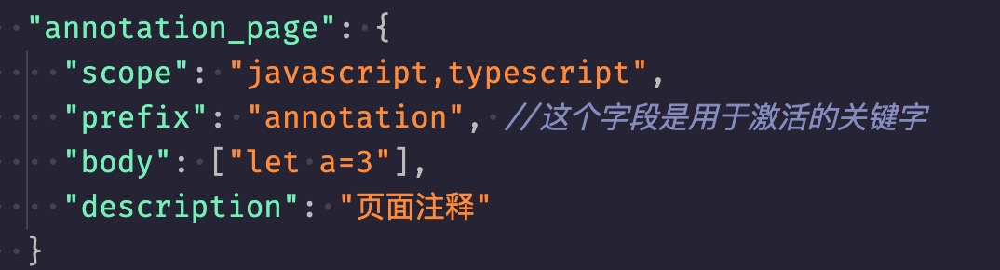

VSCODE 代码片段格式化工具
使用说明:如何在vscode中定义便捷的代码片段
-
步骤一：打开vscode=>点击左上角的「文件」=》 「首选项」=》[代码片段] => 「选择或新建一个文件」 。打开后如下

-
步骤二：在上面的输入框黏贴你需要定义的代码片段，把输出结果整个复制到下面的图中的body里面,注意prefix字段就是用来唤醒某一段代码的

- 最后：设置完保存后回到其他文件下输入prefix中的内容，就会弹出只能提醒，选择对应的片段即可
- Github地址